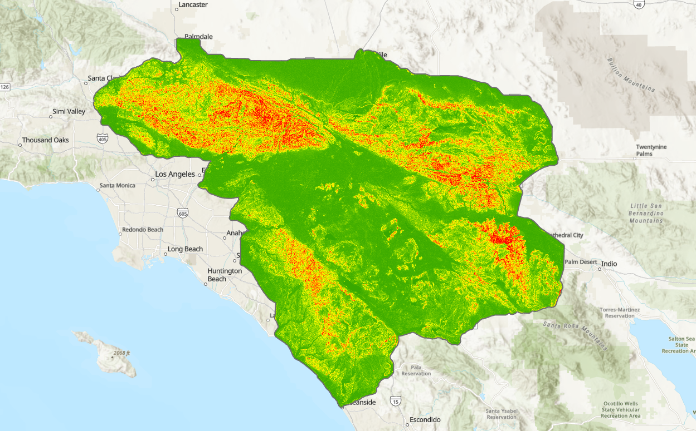
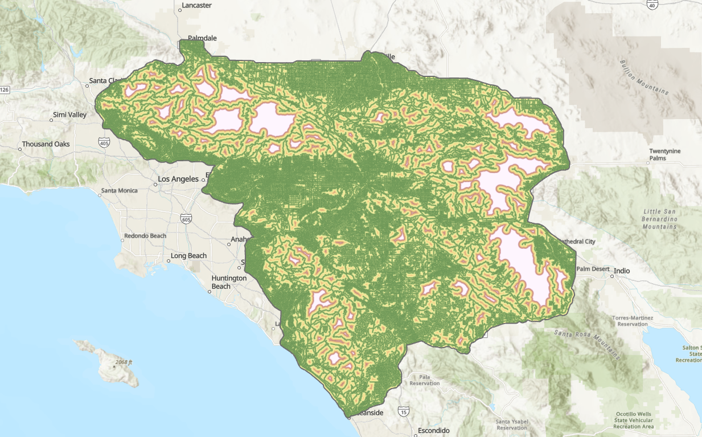
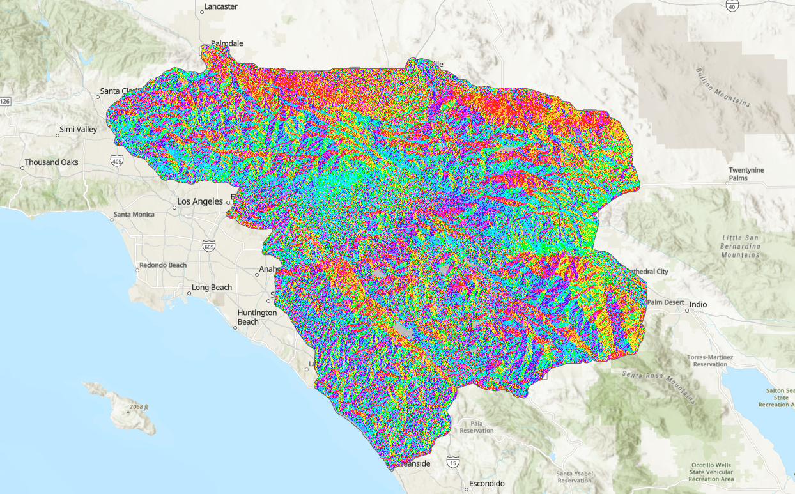
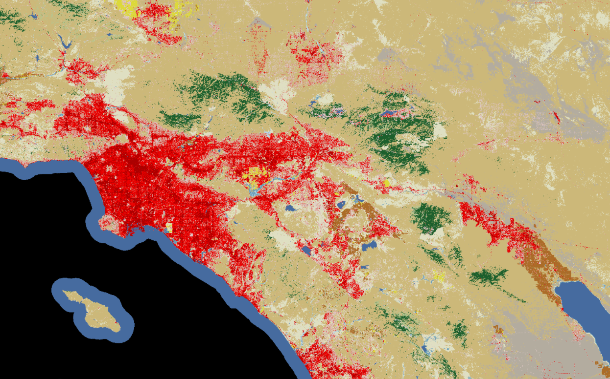
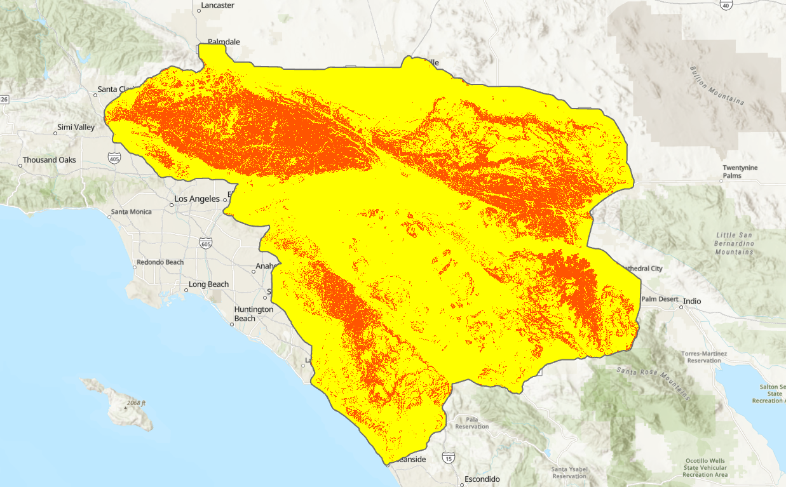
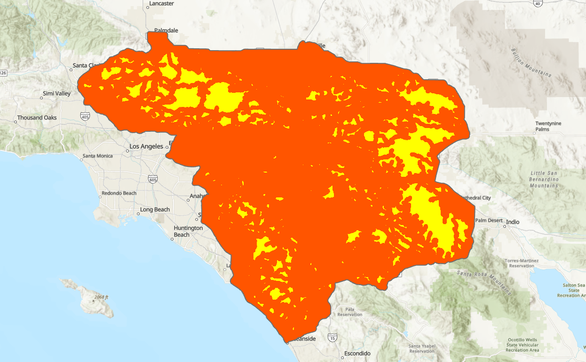
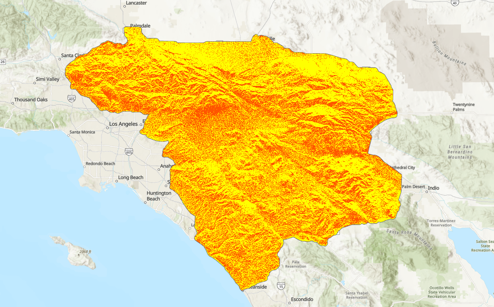
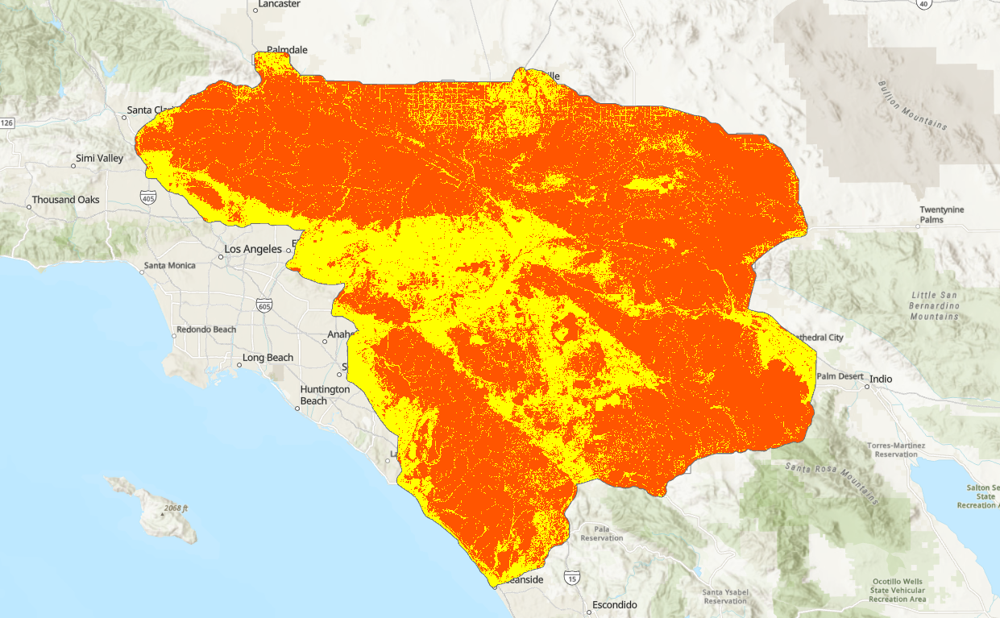
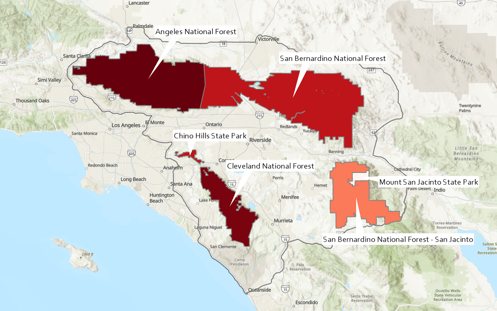

This was my final project for a course I took last semester. Throughout the course, we used tools in ArcGIS and Excel to clean, analyze, and display data. The purpose of the final project was to use all of the skills we gained throughout the semester. By choosing to measure wildfire risk among national parks, I was able to utilize digital elevation models, raster analysis tools, and zonal statistics. This accurately showed the skillset I developed over the course of the semester and allowed me to experiment with new analysis tools and methods of displaying information.
I started by gathering my data and importing the DEM tiles into ArcGIS. After combining them using the "Mosaic to New Raster" tool, I defined a study area with a 1km buffer and masked the DEM raster to the buffered study area.
To find the slope, I used the DEM as an input and used the "Slope" tool. I used the "Focal Statistics" tool to find neighborhoods of cells with strong slopes and marked areas with slopes greater than or equal to 30% as risky.
Then, I determined risky areas based on proximity to roads. Using data from the U.S. Census TIGER program, I applied the "Euclidean Distance" tool to add a buffer to all the roads in the study area. I decided on a 1km distance -- if a cell is less than 1km from a road, it's risky.
Land cover data was sourced from the National Land Cover Dataset through the MRLC. I sorted land cover types water, developed land, cropland, barren land, and wetland as not risky and all other vegetative types as risky. Anything that wasn't labelled as a type I assigned "NODATA" so they wouldn't display on the map. I set non-risk as transparent/no color so any color displayed on the map was risky.
The last risk criteria I took into account was aspect. I put the DEM into the "Aspect" tool and classified south, southeast, and southwest facing land as risky. Same as land cover, I changed the colorway such that only risky areas displayed in the layer.
Then I combined the risk criteria layers using the Raster Calculator. Some of my layers showed lakes as risky, which didn't make sense, so I set up my equation as (slope + road proximity + aspect) * land cover type. By doing this, any area with a risk of zero based on land cover would automatically display as zero risk. This created a layer that ranked wildfire risk from 0-3, with 3 being riskiest.
Then I wanted to display this information in a way that might be more practical for the average person, so I added a shapefile with national park information. I used the "Zonal Statistics as Table" tool and added the parks shapefile as my zone data and the wildfire risk as my input raster. Then I joined the table to my parks layer and classified risk type by color. I labelled each park with its name so anyone hypothetically viewing the final map could plan their trip accordingly.








